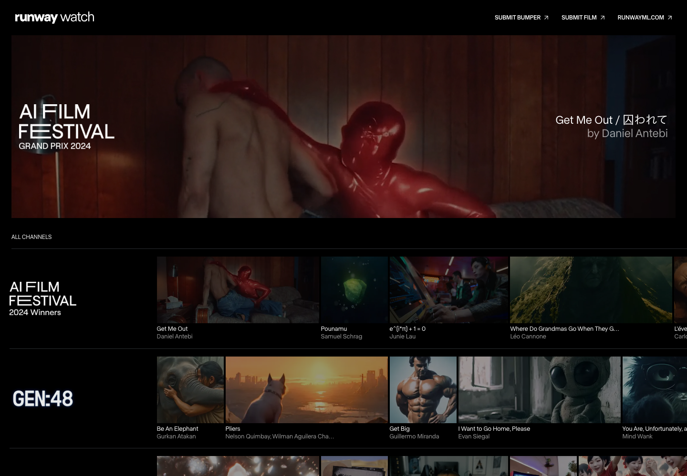
Runway Watch
Quiet cinematic display
The interface gets out of the way so the work can sell itself.
“OMG, I can make this. They turned it into an exact science.”
Finished ads create desire. The attached Format creates confidence. Every screen must protect that order.

The interface gets out of the way so the work can sell itself.
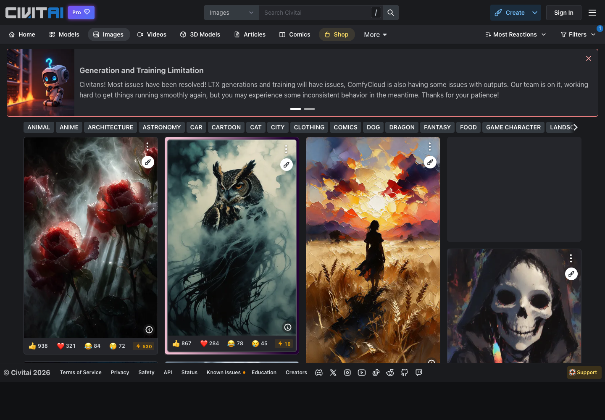
People find an image first, then discover the reusable recipe behind it.
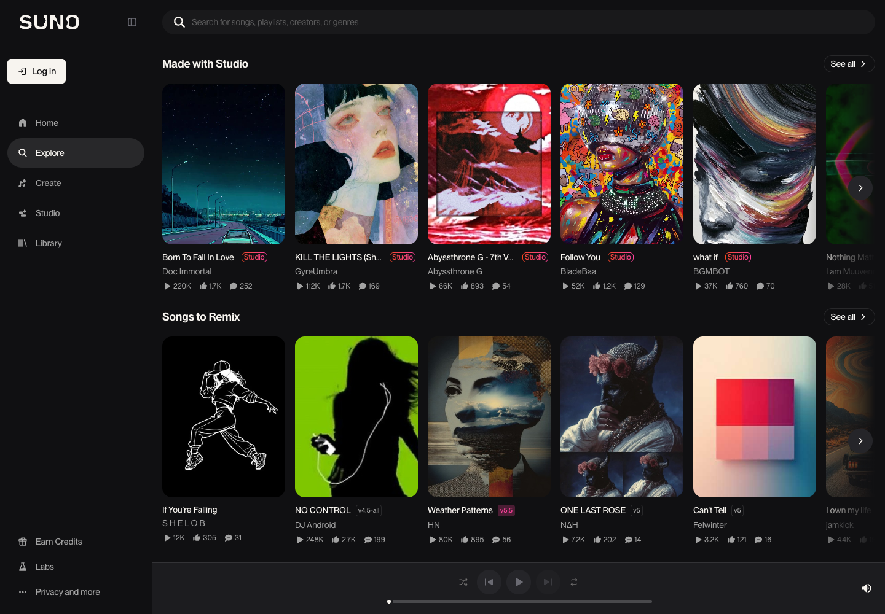
Media is usable in the feed, not trapped behind poster thumbnails.
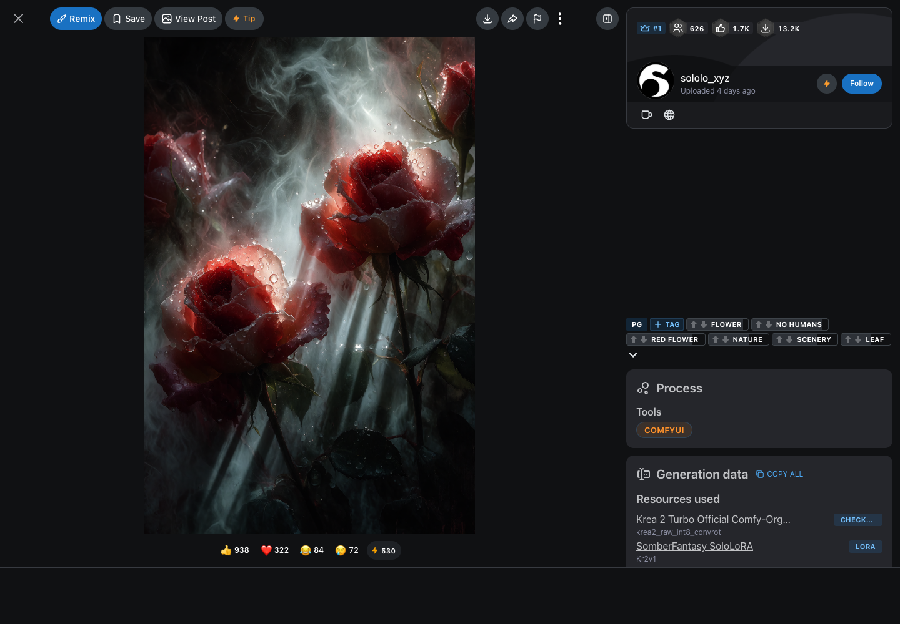
Creator, process, tags, save, and remix stay available without covering the work.
The playable finished ad owns the page. A compact side panel shows brand, creator, “Made with 3D Breakdown,” save, share, and one dominant Use action.
Raw prompts, provider names, and the technical kit remain collapsed under “How it was made.”
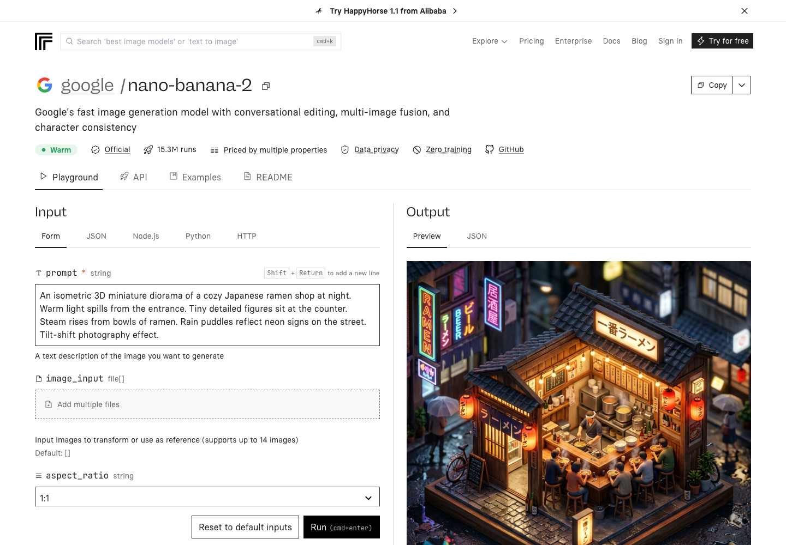
The user can see what goes in, what comes out, and what it costs.
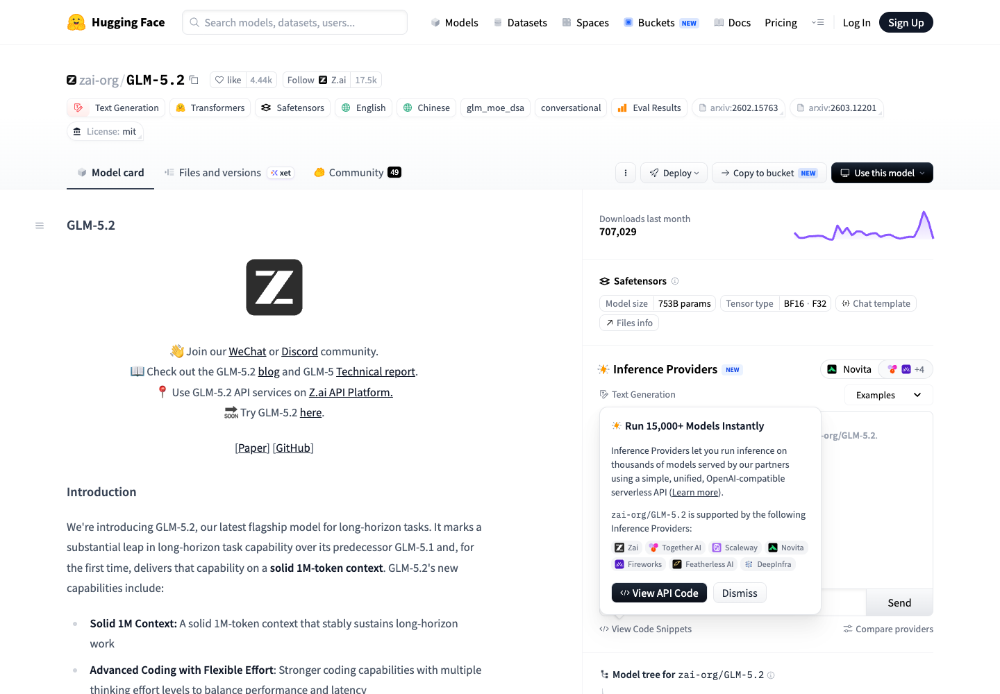
Creator, version, usage, providers, and one-click use are layered around a stable identity.
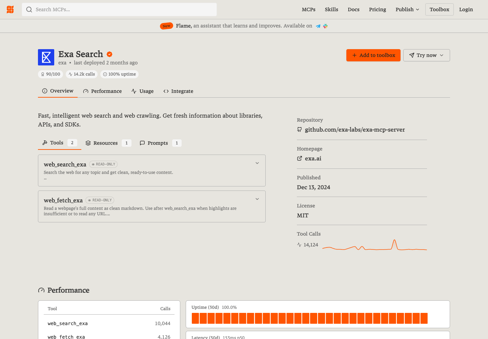
A reusable capability has one obvious action and the technical proof stays nearby.
Use this Format opens one short sheet: required inputs, typical time, estimated cost, available agent, and Start. The agent gets the exact Format version and asks one question at a time.
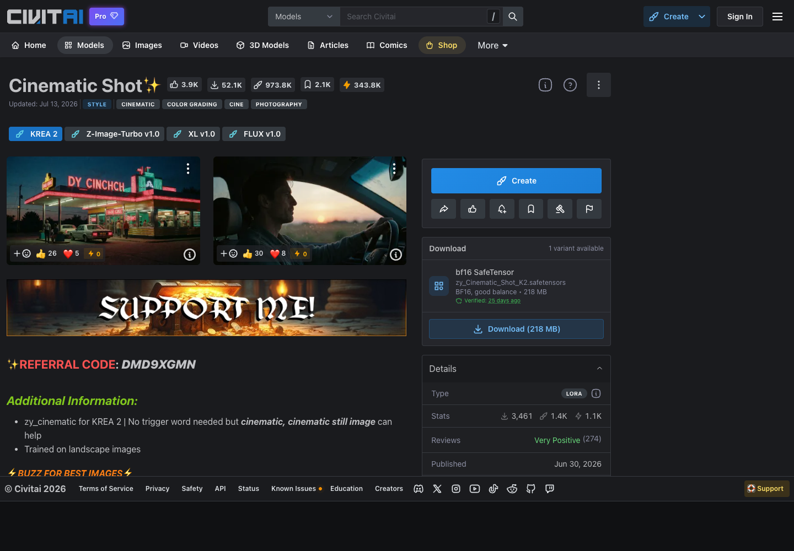
Multiple outputs demonstrate what the reusable object can reliably create.
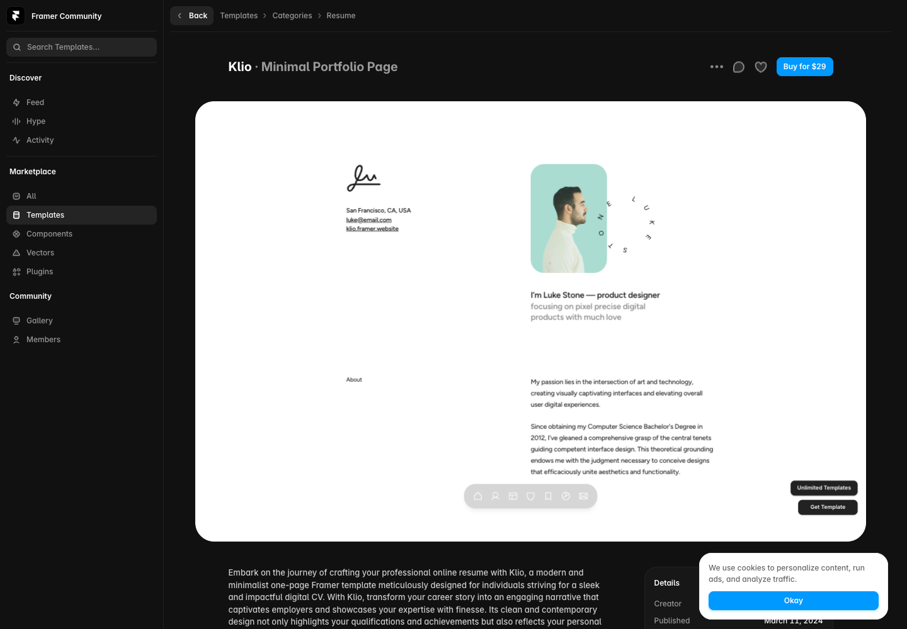
A large embedded preview lets the user inspect the thing before paying or duplicating it.
Every Format detail page opens with a cross-brand proof reel and three to five real ads. Successful outputs replace fake ratings and premature social proof.
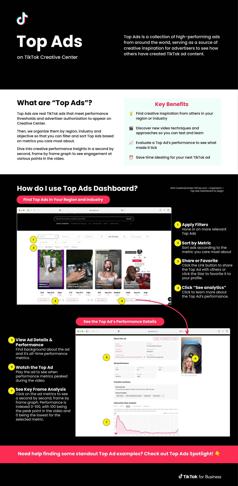
Real ads are organized around the advertiser's business question.
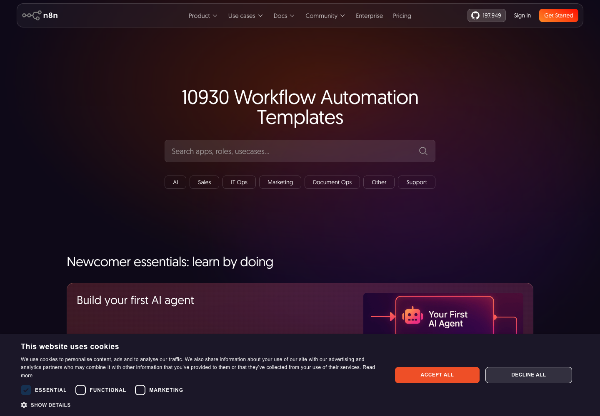
Large libraries become useful when categories describe what the user wants done.
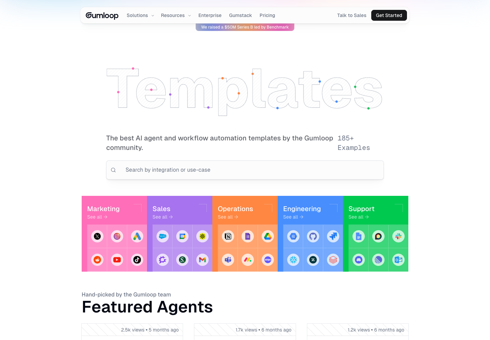
Use-case language beats internal workflow jargon.
Goal, business, platform, runtime, and media type. Model names and providers do not belong in the public feed.
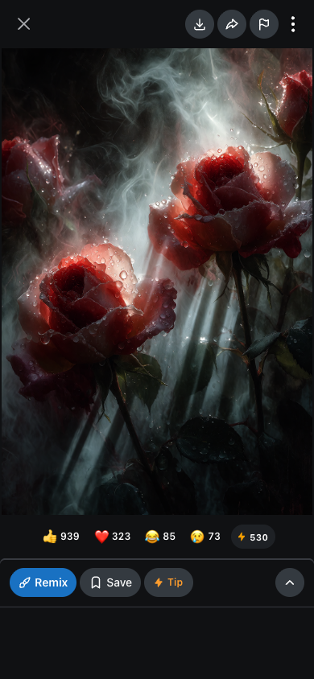
Full-height media and a bottom action bar preserve the result.
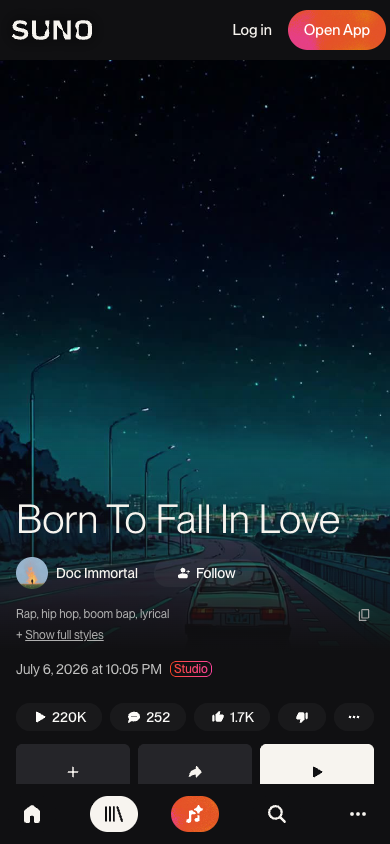
Title, creator, and playback live with the result, not above a wall of metadata.
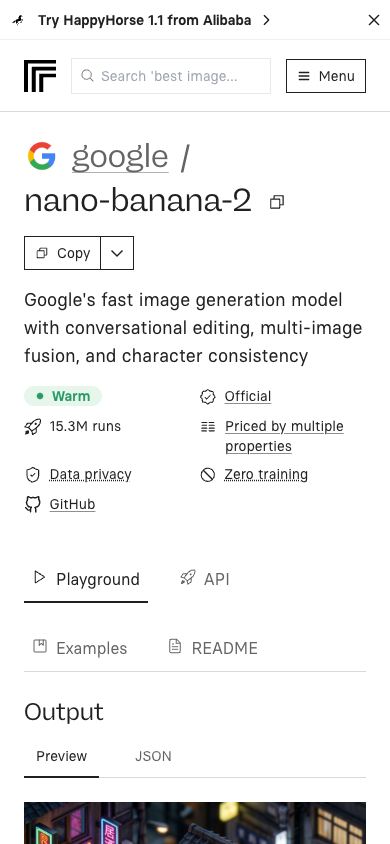
Trust data is useful, but it delays the proof when stacked ahead of the output.
Finished adThe discovery object that earns attention.
FormatThe repeatable recipe attached to the proof.
CreatorTrusted through work, versions, and lineage.
Agent handoffThe shortest path from wanting it to making it.
Find an ad worth making. See the exact Format behind it. Hand it to an agent and make your version.
Finished ads → Formats → agentsCurated feed. Real outputs. Four public pages. Save, share, use, and credit.
No social-network bloat